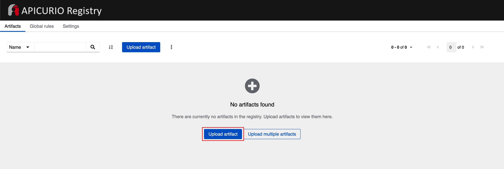
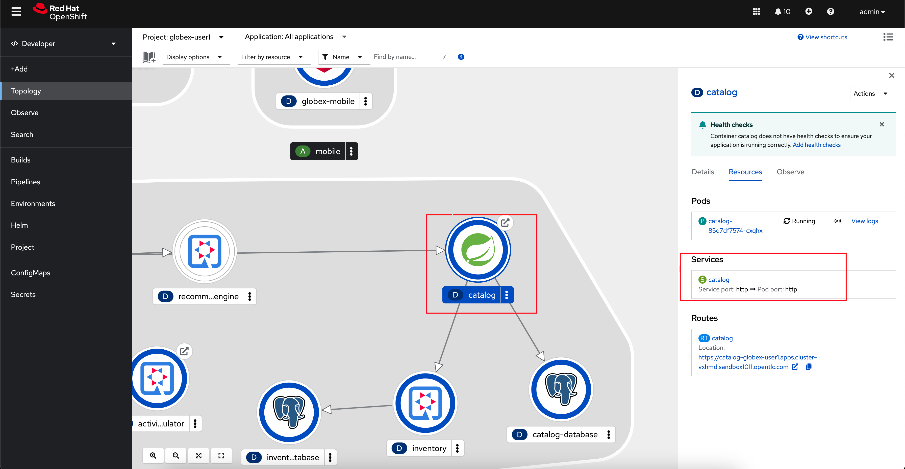
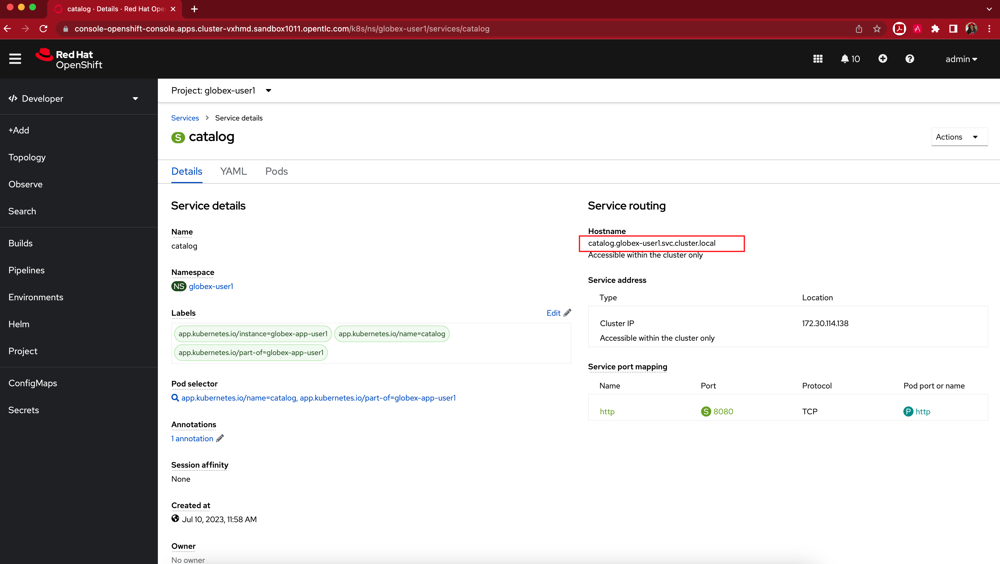

Solution Pattern: Manage and Secure APIs with an API First Approach See the Solution in Action 1. Setup the solution To provision the demo you will perform the following steps - each of which are explained in detail in the next sections: Gain access to Red Hat OpenShift. This solution pattern has been tested on OpenShift 4.13 Ensure you have the tools oc and ansible installed in your local environment such as your laptop Access the OpenShift cluster with cluster-admin privileges Log in to OpenShift with cluster-admin role via cli Run the Ansible playbook Run a bunch of scripts to deploy the Solution Pattern in your OpenShift cluster 1.1. Pre-requisites Here is the list of tools you need in your local enviroment so that you can use the automated installation. OpenShift CLI (oc client) Ansible CLI Ansible kubernetes.core module To check if you have the cli tools, you can open your terminal and use following commands: oc version #openshift cli client ansible --version ansible-galaxy --version ansible-galaxy collection list #the list should include kubernetes.core If you can’t see kubernetes.core collection listed, you can install it with ansible-galaxy: ansible-galaxy collection install kubernetes.core 1.2. Installing the demo Login to your OpenShift cluster as cluster-admin (because a number of operators will need to be installed) Click on the username on the top right hand, and then click on Copy login command. This will open another tab and you will need to login again Click on Display token link, and copy the command under Log in with this token. This will look like this oc login --token=<token> --server=<server> Clone the ansible scripts as follows in an appropriate folder in your local environment git clone https://github.com/rh-solution-pattern-api-first/ansible Navigate to the ansible folder cd ansible Run the ansible playbook as shown below. This will take a few minutes to complete. Ensure that the ansible playbook is deployed without errors ansible-playbook playbook.yml This is the output you get from the above ansible command: PLAY RECAP *********************************************************************************************************************************************************** localhost : ok=117 changed=22 unreachable=0 failed=0 skipped=43 rescued=0 ignored=0 That’s it! You are set to try out this Solution Pattern! ｡◕‿◕｡ 2. Walkthrough guide In the following sections you will follow this journey: Design an API resulting in an OpenAPI schema Govern the schema with a registry for use by various teams Mock the APIs to enable faster inner loop development Manage and Secure APIs to allow access for external teams 2.1. Personalize this instructions To personalize the rest of the instructions to your OpenShift enviroment, At the top-right of this page enter username as user1 subdomain to match your OpenShift cluster under the Your Workshop Environment section Press enter or click on the Set button The menubar and the rest of this walkthrough guide will be updated with the username and subdomain as shown below The subdomain would look something like this apps.cluster-name.guid.subdomain.myopenshift.com 3. Design APIs In this section you will import an existing API that will be used as a starting point, explore the designer while making a few minor edits. You will then export this to a Service Registry in the next step. 3.1. Import API To import the OpenAPI draft into API designer, you can import the content as text OR upload as file. To keep things simple in this workshop, you will import the content by simply pasting the draft spec into the API designer. In a real-world scenario you might start with an empty API specification, and define the different elements of the spec document. You would then export the spec in JSON or YAML format (by copying the contents from the source editor) to your local file system and push it to version control. The API Designer has been pre-deployed on OpenShift. Launch the API Designer by clicking on API Designer Click on the New API button. Click on the Source Tab on the New API page, and delete the entire content in the window. Note: Keep this tab open. You will be pasting the draft OpenAPI into this window. Click here to view the draft OpenAPI . Copy the entire contents from this webpage (Ctrl+A and Ctrl+C) Now paste the copied content (the draft OpenAPI) from the above step into the API designer’s Source Tab replacing all of the existing content. Click on Save button as highlighted in the screenshot below. Navigate back to the Design Tab You can now view the Product Catalog API on the browser. You can explore the Paths, Data Types and Responses that are part of this API. 3.2. Explore and edit the API Click on the product-list under the Responses section Click on the 2 example(s) defined link. You will see the list of examples given At the right-most side of the Examples table (scroll sideways), hover the mouse over the product-list-with-inventory example and click on the Edit button shown as a pencil icon. This opens the example’s content. The example’s content is displayed in the popup window. Replace the name of the first product by adding your name. I’ve changed this from Quarkus T-shirt to Jaya’s Awesome Quarkus T-shirt Make sure you click on the Edit button to confirm your edits. The changes made are now visible on the main screen. The OpenAPI specification is now ready to be downloaded. Click on the down arrow button adjacent to Save As.. and then choose Save as YAML button found on top-right of the page. The file gets saved automatically in the Downloads folder of your computer. The Product Catalog OpenAPI spec is ready to be governed with a Service Registry. With the API Designer all your designs are stored locally in your browser. Clearing your browser cache or switching to a new browser might result in loss of data. Make sure you save your work by downloading your designs locally or as described in the next step export them to a Red Hat Service Registry instance. You can close all the other browser tabs but this Instructions browser tab you are viewing. In the next section, you will import this API spec and govern it with Red Hat Service Registry. 4. Govern APIs Publish, discover, and reuse artifacts with Red Hat build of Apicurio Registry Red Hat build of Apicurio Registry is a datastore for sharing standard event schemas and API designs across event-driven and API architectures. Goals of this section * Import the OpenAPI Spec into Service Registry * Enable Content Rules to test OpenAPI format validity 4.1. Launch Service Registry Launch Service Registry by accessing Service Registry  Red Hat build of Apicurio Registry has been set up within OpenShift globex-apim-%USERID% namespace. You can access the deployment from the OpenShift Console, and if required login with(%USERID%/openshift). Click on the Upload artifact button as shown in the above screenshot. You will be presented with a Upload Artifact wizard In the wizard, enter the following details, and click on the Upload button. Use the exact same values as instructed below to avoid errors in the other sections of this module. Group: globex ID of the artifact: ProductCatalogAPI Artifact textarea: Click on Browse.. button to upload the Product Catalog OpenAPI downloaded in the previous step, or Drag & drop the file into the textarea. Click the Upload button Note that the Globex Product Catalog API Gateway artifact has been uploaded to Service Registry and can be viewed on the webpage This OpenAPI schema can be easily shared with others through the OpenAPI Schema’s endpoint. This schema can be used for generating client SDK as well by clicking on the Generate client SDK link that can be seen in the screenshot above. Click on the Documentation tab to view the OpenAPI specifications Click on the Content tab to view the schema in JSON format 4.2. Enabling Artifact-specific rules for format validity Navigate back to the Overview tab. Observe the Artifact-specific rules section which provides options to validate the schema and enforce compatibility while the artifact is updated. Click on Enable button (highlighted in the above screenshot) for Validity rule and choose Full from the dropdown. This rule ensures that the content is valid when the artifact is updated. Click on the Content tab. Copy the entire content of the artifact shown in this tab into the memory with Ctrl+A and Ctrl+C. Click on the Upload new version button on the top-right of the page, and paste the content of the schema that you copied in the previous steps into the textbox provided with Ctrl+V. Delete the closing } at the bottom of the text box and click Upload. The original content: After introducing an error: You will observe an Invalid Content Error stating that one of the content rules has been violated, and displaying details of the error. The artifact’s content is not updated. Click on Close to dismiss the error. In real-life, the content rules are very helpful when APIs are used to manage Service Registry schema updates. To learn more about view the Product Documentation for Red Hat build of Apicurio Registry Remember, this OpenAPI schema can be easily shared with others through the OpenAPI Schema’s endpoint. You can close all the other browser tabs but this Instructions browser tab you are viewing. In the next step you will explore the use of the ProductCatalogAPI specification to setup mocks. 5. Mock APIs 5.1. Setting up mocks to help with parallel development Now that the OpenAPI specs are finalised, creation of API mocks will enable parallel development streams leading to rapid inner loop development. The various dev teams (such as mobile dev) do not need to wait for the APIs to be completely developed and instead can use these mocks to get realistic responses. Backend developers in parallel build the backend applications APIs using modern cloud-native frameworks such as Quarkus. There are a number of ways to mock APIs including microcks, postman etc. In this module, you will use Microcks which has been deployed on OpenShift already. Goals of this section * Import the Product Catalog API from Service Registry * Test the imported API using the mock server and look for the change made to one of the examples in the API Designer 5.2. Import the Product Catalog API Microcks has been set up in dev-mode within OpenShift globex-apim-%USERID% namespace. Launch microcks Microcks has been setup in developer-mode without authentication only for the purpose of this workshop. You can access the deployment from the OpenShift Console. If required, login with your username and password (%USERID%/openshift). Click on the Importers button as show in the screenshot below You will be presented with the Import Jobs page. Click +Create button. In the Create a new Job wizard - Step 1: Importer Job properties, fill in the following details as shown in the screenshot below, and click Next> button. Name: Product Catalog Repository URL: https://service-registry-%USERID%.%SUBDOMAIN%/apis/registry/v2/groups/globex/artifacts/ProductCatalogAPI The Repository URL that you provided is the OpenAPI Schema’s URL from Service Registry that you setup in the previous step. Since there is no Authentication secret to be provided, click Next > in Step 2 - Authentication options You can choose to provide a label in the Labels step. But since this is not mandatory or relevant to this exercise, you can simply choose to click Next > in the Step 3 - Labels Click Create in the Step 4 - Review step of this wizard You would be able to view the Product Catalog API that you imported being listed as shown below. Take special note of the labels as highlighted. If you see an Error label, refer to the note shown below If there is an error in fetching the content, this could mean that you had provided a different name to the schema within Service Registry other than ProductCatalogAPI Navigate to the APIs | Services to view the API that has been successfully imported. Click on Product Catalog API link (highlighted in the screenshot below) View the details of the imported Product Catalog Click on the arrow > against the first operation GET /services/product/list/{ids} to view the details of this operation. You may note that this operation holds the example that you had edited to include your name :) You will now be able to see the Mock URL, the response code and other details for this specific operation Copy the Mock URL by clicking on the Copy icon shown in the Mock tab named product-list-with-inventory. Refer to the screenshot below. The order in which the Mocks are displayed could be different from the screenshot. So ensure you are choosing product-list-with-inventory and not the product-list-without-inventory 5.3. Try out the mock URL Open a new browser tab, and navigate to the Mock URL you copied in the above step. You can view the list of products from the example of the Mock. Note that the name of the Quarkus T-shirt now says Jaya’s Awesome Quarkus T-shirt (or the name you have for this product) These mock end points of the mock server can be used by the dev teams that are dependent on the APIs, to continue development in parallel without having to wait for the backend services to be fully developed, thereby accelerating time to market. Go ahead and close all the other browser tabs but this Instructions browser tab you are viewing. In the next step, you will learn to protect the API by using Red Hat 3scale API Management. 6. Manage and Secure APIs 6.1. Introduction Once the backend teams fully develop the APIs backends, the APIs can be published for external consumption with an API management platform. Globex uses Red Hat 3scale API Management for managing these APIs. The external teams such as the mobile team will be able to use the built-in developer portal of 3scale to sign up for various application plans. In this section you will Launch the 3scale tenant which has been created for you Manage and secure the predeployed Product Catalog API with 3scale Test secure access of the Product Catalog API View the traffic analytics generated 6.2. Access 3scale Navigate to 3scale to launch the 3scale tenant created for you. Login with your username and password (%USERID%/openshift) Notice than a sample API which has been already set up. You will not be using this but will be creating a new one for this workshop for the Product Catalog API that you’ve been working on so far. 6.3. Create Mobile Gateway Backend, Product and ActiveDoc on 3scale To integrate and manage the Product Catalog API in 3scale, you need to create Products and Backend. In this lab you will declare the 3scale assets like Product and Backend as Kubernetes Custom Resources. The Custom Resources are detected by the 3scale operator which applies and synchronizes the Custom Resources (CRDs) on the 3scale platform. Note: Click to learn more about Backends, Products, ActiveDocs and CRDs 6.3.1. Create 3scale Backend To create the Backend for Product Catalog API Gateway, you will need the Service URL of Product Catalog deployment which is already running on OpenShift. Note: Click to learn more about OpenShift/Kubernetes Service and how to find it Navigate to the OpenShift Console. If required, login with your username and password (%USERID%/openshift). Open the Developer perspective in the globex-apim-%USERID% On the OpenShift console, click on the icon in the top menu on the right. This opens an editor where you can enter a Kubernetes resource definition in YAML format. Paste the following Backend 3scale Custom Resource in the editor. apiVersion: capabilities.3scale.net/v1beta1 kind: Backend metadata: name: globex-product-catalog-backend namespace: globex-apim-%USERID% spec: name: "Globex Product Catalog Backend" systemName: "globex-product-catalog-backend" privateBaseURL: "http://catalog.globex-%USERID%.svc.cluster.local:8080" providerAccountRef: name: 3scale-tenant-secret metrics: hits: description: Number of API hits friendlyName: Hits unit: "hit" mappingRules: - httpMethod: GET pattern: "/" increment: 1 metricMethodRef: hits Click Create to create the 3scale Backend resource. The 3scale operator creates the Backend resource in your 3scale tenant. You are shown the Backend details page. Note under the Conditions section at the bottom of the page, the Type Synced is set with Status as True Click on 3scale to view the backend created for you. Click on the Backend Globex Product Catalog Backend link to view the Backend overview page. 6.3.2. Create 3scale Product and ActiveDocs The next step is to create a 3scale Product, Application Plans for the Product, and also ActiveDocs for the Product Catalog API Navigate to the OpenShift Console. On the OpenShift console, click on the icon in the top menu on the right. This opens an editor where you can enter a Kubernetes resource definition in YAML format. Paste the following Product and ActiveDoc 3scale Custom Resource in the editor. apiVersion: capabilities.3scale.net/v1beta1 kind: Product metadata: name: globex-product-catalog-product namespace: globex-apim-%USERID% spec: name: "Globex Product Catalog" systemName: "globex-product-catalog-product" providerAccountRef: name: 3scale-tenant-secret applicationPlans: basic: name: "Globex Catalog Basic Plan" setupFee: "0" published: true premium: name: "Globex Catalog Premium Plan" setupFee: "100" published: true backendUsages: globex-product-catalog-backend: path: / --- kind: ActiveDoc apiVersion: capabilities.3scale.net/v1beta1 metadata: name: globex-product-catalog-activedoc namespace: globex-apim-%USERID% spec: activeDocOpenAPIRef: url: "https://service-registry-%USERID%.%SUBDOMAIN%/apis/registry/v2/groups/globex/artifacts/ProductCatalogAPI" published: true name: globex-product-catalog-activedoc providerAccountRef: name: 3scale-tenant-secret productSystemName: globex-product-catalog-product Click Create to create the 3scale resources, and the 3scale operator creates these resources in your 3scale tenant Click on 3scale to view the Product and ActiveDoc created for you Click on the Product Globex Product Catalog link to view the overview page. Note that the Backends and the Published Application Plans that you created have been attached to the Product. Click on ActiveDocs link on the left hand navigation Click on the globex-product-catalog-activedoc ActiveDoc to view the API Before you can start accessing the Product Catalog API, you must promote the APIcast configuration as below. Note: Click to learn more about APIcast From 3scale homepage, under the Products section, click on Globex Product Catalog to view the Product’s overview page. From the left hand menu, navigate to Integration > Configuration Under APIcast Configuration, click Promote to v.x Staging APICast to promote the APIcast configurations. Similarly click Promote to v.x Production APICast 6.4. Create an Application for the default account Navigate to Audience section of 3scale from the the top menu bar You will be shown the Accounts > Listing page showing a default Developer account that has already been created. Click on Developer to view the Developer Account details. Click on the 1 Application link on the top of the page The existing list of applications associated with this Developer user is displayed. Note that there is already a default application which has been associated with this user. Click Create Application button Choose/Enter the following details in the Create Application page: Product Globex Product Catalog Application plan Globex Catalog Basic Plan Name product-catalog-basic Description Globex Product Catalog - Basic App Click the Create Application button. You can see the product-catalog-basic application details now as shown below. Make a note of the User Key that is displayed under the API Credentials section as highlighted in the above screenshot. This will be used while making calls to the API. Note: In real life, developers will create Applications from the integrated 3scale Developer Portal. 6.5. Test Product Catalog API Access To test the secure access of this API, you will use a simple Angular application which reads from the Product Catalog API endpoint and displays it on the browser. Navigate to the OpenShift Console to access the globex-apim-%USERID% namespace in it. Click on the Open URL icon highlighted in the screenshot below to view the Angular mobile application. You will see an empty page because the application is not configured to talk to the Product Catalog API yet. In the next steps you will configure the app to connect with the Product Catalog API. From the OpenShift console that you have already opened, click on globex-mobile as highlighted below to view the Deployment details. In the deployment panel, click on the Deployment globex-mobile to navigate to the Deployment details page. Click on the Environment tab from the Deployment details page. Note that there are two variables with values replace-me. You will need to update these variables which will need to be fetched from 3scale. Update the 2 placeholders as instructed below GLOBEX_PRODUCT_CATALOG_API: We will use the Staging APICast URL of the Globex Product Catalog created in 3scale. Launch 3scale Dashboard, and click on Globex Product Catalog link to view the Product Details Next navigate to Integration > Configuration from the left hand navigation, and copy the URL show under Staging APIcast section Paste the URL copied in the above step into the globex-mobile Deployment’s Environment variable GLOBEX_PRODUCT_CATALOG_API USER_KEY: This is the API Credentials that you were provided when you signed up for an Application Plan Click Applications to view the list Applications for Developer account, and click on product-catalog-basic application. Copy the User Key as show in this page Paste this into the Deployment Environment variable USER_KEY The globex-mobile Deployment’s Environment values should look similar to this. Click on Save button at the bottom of the page. A new pod will be automatically created with the new endpoint and user_key, and the application is ready to be tested. Click on the Pod tab to view the creation of a new pod. You will need to be quick or you may miss the pod creation :) Launch Globex Mobile to view the products in a browser. It may take a couple of seconds for the data to load. 6.6. View Traffic Analytics Refresh the Globex Mobile page a few times to generate traffic. Navigate to 3scale Dashboard, and click on globex-product-catalog-product to view the Product Details Click on the Analytics → Traffic link on the left hand side menu. You will see the Hits details. This section provides insights in terms of the number of hits for the product and other traffic analysis details as well. 7. Summary Congratulations! You have reached the end of the Manage and secure APIs with OpenShift API Management module of this workshop. You learnt about the various aspects of API Lifecycle management using a gamut of technologies including Red Hat build of Apicurio Registry, Red Hat 3scale API Management, Apicurio design and Microcks. To learn more about click API Management 8. Appendix: Learn More 8.1. What are Backend, Product, ActiveDocs and CRDs? Backends are Internal APIs which are then bundled into a 3scale Product. It contains at least the URL of the API. It can optionally be configured with mapping rules, methods and metrics to facilitate reusability. Products are the Customer-facing APIs. It defines the application plans, and configure APIcast ActiveDocs are interactive documentation for your API offered as a framework by 3scale. You can create API documentation by attaching the Product Catalog OpenAPI schema as a 3scale ActiveDoc A CRD file allows you to define your own object kinds (Backend, API, ActiveDoc etc) and lets the API Server handle the entire lifecycle of the objects. << back to instructions 8.2. What is a OpenShift/Kubernetes Service? In OpenShift, a Kubernetes Service serves as an internal load balancer and identifies pods which in turn have the applications. If the application needs to be accessed from outside of OpenShift, you will need OpenShift routes. In this workshop, since both 3scale and the Product Catalog API run on OpenShift, 3scale will proxy requests to the backend using Services. This also means the backend cannot be accessed directly from outside OpenShift. Finding the Private endpoint of the Product Catalog service deployed on OpenShift In a browser window, navigate to the console of the lab OpenShift cluster at Topology view. Login with your username and password (%USERID%/openshift). Open the Developer perspective in the globex-%USERID% namespace. Click on the catalog icon to see the deployment details appear on the right-hand. Under the Resources tab, click on catalog Service as indicated in the screenshot above.  You will be navigated to the Service Details page of the catalog service. Copy the Hostname highlighted in the screenshot below  This would look something like this: catalog.globex-%USERID%.svc.cluster.local This hostname is used as the Private endpoint while creating the Backend. << back to instructions 8.3. What is APIcast? APIcast is an NGINX based API gateway used to integrate your internal and external API services with the Red Hat 3scale Platform. In this workshop we use the two built-in APICast (staging and production) that come by default with the 3scale installation. They come pre-configured and ready to use out-of-the-box. << back to instructions 2. Architecture